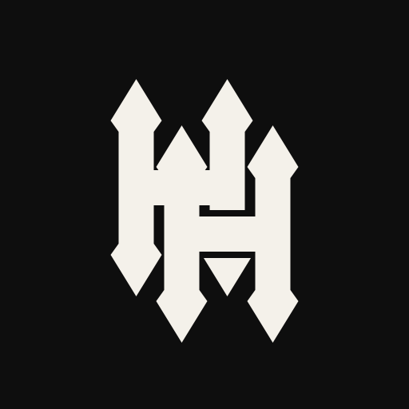
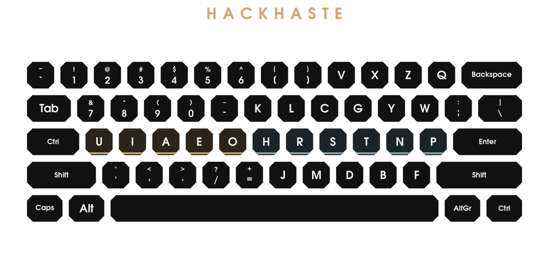

Choir · left home
U I A E O
The nucleus. Roughly two-fifths of English letter-strokes never leave this row. Digits, prose stops, and the mechanical suit of code sit in the same posture.

HackHaste Board. Try it! Doctrine. Measure. Install. Learn. Hack.Version 0.2 · MIT License · Dr. Marcus Roe
One hand sings. The other stops and starts the air. English is a pulse of consonant and vowel. HackHaste notices, so plays along.
QWERTY was a clever answer to a dead machine: it scattered the alphabet so that type-bars would not clash. We have kept the scatter and lost the machine. Other layouts put common letters under strong fingers, but then split the vowels across both hands, as if language syllables were inventories to be tallied.
HackHaste does the thing so obvious that it looks like a joke. Syllables are consonantal gestures containing the breaths of the vowels. Anyone who has heard a child say ma or no or the already possesses the science.
Let no act be done without a purpose.
U I A E O
The nucleus. Roughly two-fifths of English letter-strokes never leave this row. Digits, prose stops, and the mechanical suit of code sit in the same posture.
H R S T N P
The clusters. TH, ST, NT, NS, RT, RS, TR roll on one hand. T is a specialist on the ring finger. P is the modest partner of N.
ETAOINSHR all live at home, on the correct sides. Close to three quarters of letters are struck without leaving home. Physical Caps is Control (Command on Apple and NeXT). Shortcuts follow the letter. AltGr follows the letter.
Iron plates · bone legends · home is not a parking lot

If you undertake a role which is beyond your powers, you both disgrace yourself in that one, and at the same time neglect the role which you might have filled with success.
U; up 7; down quote; 1. SEVEN-Up to quote the ONE!I; up 8; down comma; 2. I EIGHT @ TWO COMMAS.A; up 9; down period; 3. Most English words end in a consonant, so the singing hand ends the sentence. A THIRD period of the NINTH degree.E O; 0 - / =; 4 5. Numbers without leaving the choir. So divide the Egg to subtract the gO0se and equate it with dirt.H stays on its hill. R is the liquid. K L J M around them. Realise oLd "HoMe" was Just a Kite.S home, C up, D down. Stay Calm, Dude.T is a specialist. G up, B down. VeGeTaBle.N P home; Y W ; and the rare attic V X Z Q. No Problem, You're Welcome, Friend.Look beneath the surface; let not the several quality of a thing nor its worth escape thee.
Marcus Aurelius, Meditations 6.3
T is home on the ring. G is up, B is down, V is the number-row key in that same column: physical 9, in line, not a sidestep. X Z Q are the pinky attic. V is the sixth-rarest letter, near a hundredth of English. G is about twice that, B about half again. Same order. The column is a stack, not a quarrel.
The ordered pairs inside {B, G, T, V} are noise. They sum to a few dozen strokes in ten thousand, and that count is polite enough to include TT and the abbreviation TV. TH alone is an order above the whole set. BT, TB, GT, TG, BG, GB do not appear in the common list. A finger may hold four letters and still almost never strike two of them in a row. VeGeTaBle.
No great thing is created suddenly, any more than a bunch of grapes or a fig. If you enquire, you will find that the fig-tree has put forth a great effort.
Epictetus, Discourses 1.15
R S T sit index, middle, ring, at home. The block is a roll. English already knew this: first, rest, start, the skeleton of a word before the vowel arrives. R is the liquid that passes between consonant and vowel. It stays next to H, and H was already on its hill.
[ and ] occupy physical 7 and 8. The index and the middle therefore have no letter on the number row. Their upward travel is a bracket, which is rare, and then they come home. K and J take the diagonals: K on physical Y, J on physical N. Those are the worse reaches, and they are the weaker keys. J is an order below V. K is about the size of V. Spending the in-column number-row key on either of them would put a diagonal letter in a straight hole and a straight letter on a diagonal. The girding is the refusal.
But be ye doers of the Word, and not hearers only, deceiving your own selves.
St. James, 1:22
Physical Caps is Control. Command on Apple. We need no key that shouts so close. We need a key that commands. Shortcuts follow the letter.
The right hand keeps both editors, on opposite edges.
Vim reads letters. K over H over J: physical Y, H, N. Up, home, down, one column. L sits on physical U. The old hjkl positions are not those letters. They send H R S T, which is the roll. A vim user who navigates by letter finds the column like an engine at the beginning of every sentence. This is on purpose. The name HackHaste is not a joke, though its shortening in HaHa takes the shape of laughter: laughter from the joy of expedience.
Adapt yourself to the things among which your lot has been cast; and love those with whom you have your lot cast, but do so truly.
Marcus Aurelius, Meditations 6.39
N and P are the two home keys immediately left of Enter. Physical ; and '. Control is the other hand. C-n and C-p are a pinky and a modifier, no reach. Next line, previous line, on the carriage, where the line already ends.
B and F are the bottom row, physical . and /. C-b and C-f. Forward and back are reaches, and they are held: the repeat lives there. C-n and C-p are mixed, a tap as often as a hold. Home goes to the mixed pair. The reach goes to the pair that is ridden. The carriage was not decorated. It was assigned.
Identifiers: haha / haha-left / haha-shiftlock / haha-left-shiftlock. Try it out, let us know if you have any issues. Let us know if we missed any OSes.
cd linux && sudo ./install-hackhaste-linux.sh && setxkbmap haha sudo dpkg -i dist/hackhaste_0.2_all.deb sudo pacman -U dist/hackhaste-0.2-1-any.pkg.tar.* sudo rpm -i dist/hackhaste-0.2-1.noarch.rpm
Each new finger learned arrives with a new phrase. Say them aloud once, looking. Repeat, not looking. Phrases are cities, sentences nations, paragraphs whole worlds. The syllables constructed are the people and families.
The workshop, the porch, and the tutors live next to this webpage in the repository.
In HackHaste, English and Code came together and signed on a mutually beneficial loan, making minimal compromises for maximal outcome. On the books, that means homerow is 74.21% of letters for HackHaste, 74.14% for Colemak, 71.17% for Dvorak, and 34.29% for QWERTY. On code it is 73.25%, 69.82%, 65.66%, and 30.42%. Modest wins for HackHaste over the great Colemak and Dvorak.
Two texts, one fingermap, digits kept. The prose data is not just an American sample, including a majority of International English: 62% and 38%, the distinction matters little when broken out statistically as they score relatively the same. The sample is 29 books, 12,400,035 keystrokes, in that split. Swift and Stoker are in the British share. I am a hopeful sampler.
Code is weighted toward the languages developers use, from the 2026 Stack Overflow survey, 810,027 keystrokes, 6.18% digits. JavaScript is still the language the most people said they used, at 62%, for the twelfth year. Shrinking from 2025 when that share was reported at 66%. Python is a growing 58%, and among people with one to five years it is ahead of JavaScript, 66.6% to 61.6%. Rust rose from about 15% to 18%, at 12th now. This sample is about 24% JavaScript and TypeScript together, 21% Python, and 7% Rust, then Java, C#, SQL, C, PHP, and C++. Shell and Go are in it and smaller. Everything gets measured. Weights, in the open: home 0, the letter rows off home 1, a number-row key in that finger’s own columns 2, physical minus and equal 3.
Rolls are the fingers used directionally, pinky toward index or index toward pinky. A cross-roll is that same direction with one key of the other hand in the middle. Most comparison tables count only the regular roll, so the cross-roll is missing from them. To repeat: the roll is an ordering of three keys in one direction, with cross-rolls throwing in asides. Statistically, it should be difficult to get above 75%, as there is always a crossback-reversal or same finger at the end of a roll.
Same finger is one finger and two different keys, one after the other. On QWERTY the usual pair in the books is ed. E is the left middle finger, on the upper row. D is that same finger, on the home row. The finger strikes, moves, and strikes again. A doubled letter such as ee is not counted.
Regular and cross, added. More is better.
One hand. The usual table.
Keys of the other hand in the middle.
A regular roll stays on one hand. A skip over one finger is also a roll: 61.6% of HackHaste’s, 53.0% of Colemak’s on regular one hand rolls. A cross-roll is the same direction with up to three rolling keys of the other hand after the second finger of a roll, returning thus to a third finger in the roll on the first hand. Other tables stop at the regular roll. The one-sided metric of one-hand roll only and not cross-roll usually on the books is led by Colemak. The cross-roll of Dvorak leads only slightly over HackHaste, the success due in part to Dvorak's attention to the vowels. Added together however, HackHaste takes a very close lead above Dvorak overall as developed specifically for this. Colemak makes a good showing as well.
Regular and cross, added. More is better.
One hand. The usual table.
Keys of the other hand in the middle.
On code HackHaste is first overall, with Dvorak and Colemak not far off. Regular one-hand roll alone is again led by Colemak, 44.66% against HackHaste’s 39.12%. The cross-roll is this time led by HackHaste, 45.10%, with Dvorak close at 44.14%. Other tables would have stopped at the regular roll.
QWERTY’s leading same-finger pair is de: 6,088 times. Colemak’s is 0;, 6,021 times, and that pair is QWERTY’s second. In-column number-row reaches are 7.86% for HackHaste and 11.65% for the other three, because 7, 8, 9, and 0 left the number row, a trade-off from some perspectives but worthwhile. Interestingly, the right ring finger HackHaste column V G T B as a block is like a pillar of proof, important letters all arrangements of which accounting for a paltry 0.03% of prose pairs together, a mercy.
The bar called Reach is all about where keys sit in relation to the fingers. Eight home placements are 0. The upper and lower rows are 1. A number-row key in that finger’s column is 2. Two smaller terms are then added, and those do look at the previous key. A same-finger row change adds the number of rows. An index finger sliding to its other column adds 1. That slide is lateral though, not quite technically reach, understandably.
A reversal is like a regular roll, except the final finger changes direction. You start one way, and the third letter comes back. This is not like a regular roll as being an utter contradiction. It's not bad, so much as statistically unavoidable for the most part on some level, but it should surely be minimized.
On QWERTY the most common letter reversal in the books, our "prose" sample, is ere, at 38,006 times. E, left middle, upper row. R, left index, upper row. E, left middle again. An especially mild example in terms of effect but informative so therefore of import. This pattern is 13.36% of QWERTY’s three-letter sequences, and 10.90% of Colemak’s. Colemak’s three most common are ion, was, and you.
On HackHaste this is 2.3%, the most common being ght, 22,441 times. G is the right ring, upper row. H is the right index, home. T is the right ring, home. Ring, index, ring. The ring comes back, which these tables count as a reversal. The whole class is 2.3% of the sequences, not 13% or 10%. Strict means an index finger took part. Weak means it did not. Of that 2.3%, 1.9 are strict and 0.4 are weak.
HackHaste and Colemak very close in this regard.
The other three all in the same ballpark, below half of QWERTY.
One finger order direction, then back.
Lower is better.
Lower is better. This is not the reversal.
One hand, then back. Lower is better.
On code, all three short bars are HackHaste. In prose, HackHaste leads on the other two but is second only in Reach to Colemak by 0.014.
One key is 19.05 millimetres. The board is the ANSI character block: number row, upper row, home row, lower row. Tab is 1.5 keys wide, Caps Lock 1.75, left Shift 2.25. That stagger is the same on a 60% and on a full-size board. The number row is two keys above home, not one. A function row is not in the distance. Each of the eight fingers starts on its home key and goes back there when the word ends. A space is most commonly that return. The thumb is not in the distance, and Shift is not a separate step.
That path is two different moves. Leaving the row is a walk: up, down, or up to the numbers, and back at the space. The porch is the other one. It is the next key on the same row, one column over. On HackHaste the left index lives on E, and O is that next key. The finger does not leave the row. It is usually the only step that finger takes. A ruler that bills the step out and the step back, at the same millimetres as a row change, is measuring a porch as if it were a walk.
Colemak’s O is the right pinky’s home key, so a single total made Colemak look shorter. That comparison was the books, and only the books, but it is also important to note that this is the only letter stretch of the left hand, given to the index. That left index therefore leaves the row for 0.08 metres per 100 words (mphw), and the whole left hand is 0.85 metres of the 5.57. The HackHaste instrument-righthand and breath-lefthand system is functioning precisely as designed, singing its choir. Colemak’s left index leaves the row for 1.23 mphw, for sake of reference. HackHaste was designed as an instrument for language and code.
Metres per 100 words (mphw). The walk.
112,082 words.
Higher or lower does not really matter in the following derivative scores. The importance is in demonstrating the contrasts by ratios. The lateral is typically underutilised, especially where not bigrammatically costly.
Same rows, one column over.
Same rows, one column over. This is the lefthand taking up its "mech" suit, doing its duty in code, and certain letters at the porch becoming less important. O is down by around 20%, H cutting off dramatically as well showing up in all but Dvorak, it being instead impacted by its placement of - on the homerow lateral to the right pinky where HackHaste has P and Colemak '. - is a column and row reach for HackHaste as well but on the strong left index instead of the right pinky, and not nearly as much of a stretch as it is for QWERTY or Colemak. ; is placed near return carriage, for an easy swipe on repeat while using Emacs cursor shortcuts.
This data reveals how fundamentally different HackHaste operates. The right-hand porches are effectively three slots the layout built on purpose. Prose use the one meant for it, and leaves the other two alone. The prose porch is H, K, J beside R, L, M. The code porch is primarily P, W, ;, \ beside N and Y, which is where the engine put it on purpose. The third porch is next to the code porch as the attic, where we keep the letters rare X (X isn't technically off the porch), Z, Q which never pair. The right index rests on R. The other key in that column pair is H, also home. The prose engine builds the, that, which, he. In the books the slide out to H is 0.46 meters per 100 words and the slide home is 0.38 mphw. Code does not say those words. The same slide is 0.11 mphw out and 0.09 mphw back. K and L sit on the upper row of that finger, so a code name can porch there too, but it does not replace H. That is the drop from 0.96 mphw to 0.32 mphw. The right pinky rests on N. The other home key is P. That is the code engine: names end in p or shorten to x and y or z, w, and q; and p stays on the home row as symbolic in maths and statistics, instead of a reach. In code the slide out to P is 0.16 mphw and the slide home is 0.13 mphw, against 0.11 mphw and 0.07 mphw in the books. N to P and back adds another 0.13 mphw. The semicolon is on that same pinky’s upper row, beside Y and W, so a slide from Y to ; is simple enough. It is small, 0.02 mphw, but it is the same idea as the rest in endings next to carrying forward. The O was put on the E porch because it is the vowel with the lowest neighbour frequencies with E. E needed to be on the index of the less used hand, and O is the least common neighbour of E by quite a massive factor (I could have chosen OA/AO or IU/UI and people still would have complained about boat or luigi as opposed to geology; I stand by E needing to be on the strongest finger at the porch of the less active hand.):
Nothing in the code bar was filtered out. It is the eight fingers added together. On the books the HackHaste left hand is 0.85 mphw. In code it is 6.16 mphw. The left ring goes from 0.37 mphw to 1.20 mphw, the left middle from 0.19 mphw to 1.40 mphw, and the left index from 0.08 mphw to 2.54 mphw. The less-than sign is the comma key, the greater-than sign is the period key, the open parenthesis is 9, and the close parenthesis is 0. This sample has 1,932 less-than signs, 3,210 greater-than signs, 17,568 open parentheses, and 17,615 close parentheses. The parentheses are the large left-hand reach. The angle brackets are real and smaller, because the sample is the languages people write, not a pile of templates. Shift is not some ancillary step. Colemak’s left hand in code is 5.34 mphw, and its right hand is 10.07 mphw. HackHaste’s right hand is 8.29 mphw. The code total is shorter for HackHaste because of that right hand, not just because the left one stays home in prose. It is also important to note how in the books, the word often ends on O, so the return is 0.44 mphw of porch. In code that finger often ends on 9 or 0, so the return is a walk and only 0.19 mphw of porch is left. The large drop between prose and code is all about H, not O, just like with Colemak and QWERTY. Books slide the right index between R and H for 0.96 mphw. Code does that for 0.32 mphw. P actually rises. The 2.36 mphw to 1.68 mphw is that H slide leaving, plus the O ending no longer happening on a row.
| Finger | HackHaste | QWERTY | Dvorak | Colemak |
|---|---|---|---|---|
| Left pinky | 1.03 | 0.68 | 1.47 | 0.68 |
| Left ring | 1.20 | 0.70 | 0.95 | 0.70 |
| Left middle | 1.40 | 3.06 | 0.77 | 1.69 |
| Left index | 2.54 | 3.46 | 1.90 | 2.28 |
| Left hand | 6.16 | 7.90 | 5.08 | 5.34 |
| Right index | 2.41 | 3.03 | 2.36 | 2.09 |
| Right middle | 1.97 | 2.12 | 1.21 | 1.75 |
| Right ring | 1.14 | 2.58 | 2.49 | 2.00 |
| Right pinky | 2.76 | 4.17 | 4.11 | 4.23 |
| Right hand | 8.29 | 11.89 | 10.17 | 10.07 |
Two keys above home. Metres per 100 words.
The books barely type a digit.
The Big-Three’s 9 is the right ring on the number row, 41 mm from the home key. The usual 0 is the right pinky, also 41 mm. HackHaste’s 9 and 0 are on the upper row, 20 mm, above A and E. In code the walk that touches the number row is 7.06 mphw on Colemak and 4.35 mphw on HackHaste. The steps onto 9 and onto 0 are 0.71 mphw and 0.73 mphw on Colemak, and 0.38 mphw and 0.39 mphw on HackHaste. On the books those two digits barely occur, so the reach does not show up there. HackHaste’s prose number-row distance is the letters that moved onto that row as also mnemonically rare in distance, not the digits. Still HackHaste, despite appearing at first heavy on the right pinky, it is in fact revealed a third less than the other layouts.
A scissor is two neighboring fingers on different rows, one after the other. Pinky and ring, or ring and middle, reaching opposite ways, one up, the other down, from the homerow position.
Share of pairs. Lower is better.
Share of pairs. Lower is better. Here the .07% over Dvorak can be explained by the use of numbers above with the quote/double-quote, comma/less-than, period/greater-than, the divisor/fractions (frontslash), and plus/equal all on the bottomrow of the left hand. There is STRONG mnemonic functionality for function here not seen in any other layout.
Hands trading off is the other one, and here more is better instead:
Percentage of crossing pairs. More is better.
Percentage of crossing pairs. More is better
The left handles the vowels alone because it is the weaker hand for most people, and that's why HackHaste was designed with layouts from the ground up for both handnesses. I will add metrics for the left-hand layout here soon, I will also be publishing the engine used for generating these metrics for four rows of keyboard, not found on any other layout tester.